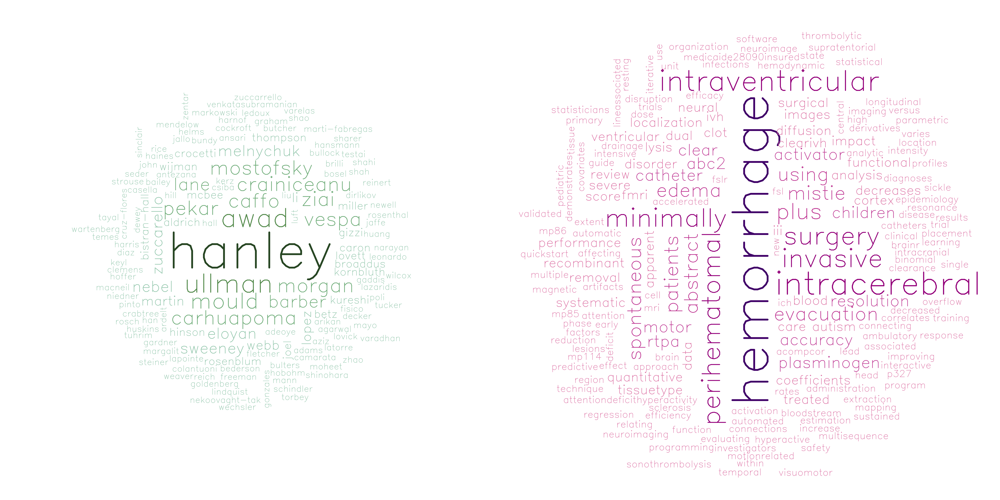

Publications
Peer-reviewed papers, proceedings, chapters, and theses.
Also on Google Scholar, ORCID, and in my CV. Search by title, co-author, journal, or year, or filter by type on the right.
-
Abstract WP305: Comparison of automated brain extraction methods in over 5000 computed tomography scans Stroke
Srirambhatla R, Walborn N, Hanley D, Muschelli J
-
Association of postoperative delirium with haemodynamic determinants of cerebral perfusion pressure during cardiac surgery: A retrospective cohort study British Journal of Anaesthesia
Goeddel LA, Gomez J, Hernandez M, Koffman L, Murphy Z, Wayson G, Whitman G, Bandeen-Roche K, Muschelli J, Crainiceanu CM, et al.
-
Low cardiac index during periods of arterial hypotension and risk of acute kidney injury in cardiac surgery British Journal of Anaesthesia
Goeddel LA, Koffman L, Zhou X, Hernandez M, Zhao A, Pasrija C, Saha AK, Muschelli J, Parikh CR, Crainiceanu CM, et al.
-
Assessment of renal vein flow index by transesophageal echocardiography: Precision, variability, and association with cardiac index during cardiac surgery Journal of Cardiothoracic and Vascular Anesthesia
Goeddel LA, Hernandez M, Koffman L, Santino C, Muschelli J, Zhou X, Waldron N, Parikh CR, Lester L, Abozaid R, et al.
-
Comparing step-counting algorithms for high-resolution wrist accelerometry data in older adults in the ARIC study The Journals of Gerontology, Series A: Biological Sciences and Medical Sciences
Gao S, Zhou X, Koffman L, Wanigatunga AA, Schrack JA, Crainiceanu CM, Muschelli J
-
Fine-mapping the association of acute kidney injury with mean arterial and central venous pressures during coronary artery bypass surgery Anesthesia and Analgesia
Goeddel LA, Hernandez M, Koffman L, Murphy Z, Khanna AK, Robich M, Whitman G, Zhou X, Bandeen-Roche K, Muschelli J, et al.
-
Function on scalar regression with complex survey designs arXiv Preprint arXiv:2511.05487
Koffman L, Gao S, Zhou X, Leroux A, Crainiceanu C, Muschelli J
-
Intranasal insulin for improving cognitive function in multiple sclerosis Neurotherapeutics
Newsome SD, Fitzgerald KC, Hughes A, Beier M, Koshorek J, Wang Y, Maldonado DP, Shoemaker T, Malik T, Bayu T, et al.
-
Minute level step counts and physical activity data from the national health and nutrition examination survey (NHANES) 2011-2014 PhysioNet. Version
Koffman L, Muschelli J, Koffman L, Crainiceanu C, Muschelli J, Pollard T, Moody B, Lehman L, Gow B, Fernandes C, et al.
-
Objectively measured physical activity using wrist-worn accelerometers as a predictor of incident alzheimer’s disease in the UK biobank The Journals of Gerontology, Series A: Biological Sciences and Medical Sciences
Zhao A, Cui E, Leroux A, Zhou X, Muschelli J, Lindquist MA, Crainiceanu CM
-
Walking fingerprinting using wrist accelerometry during activities of daily living in NHANES arXiv Preprint arXiv:2506.17160
Koffman L, Muschelli J, Crainiceanu C
-
Assessment of renal vein stasis index by transesophageal echocardiography during cardiac surgery-a feasibility study Anesthesia and Analgesia
Goeddel LA, Hernandez M, Koffman L, Slowey C, Muschelli J, Zhou X, Parikh CR, Lima JA, Bandeen-Roche K, Faraday N, et al.
-
Comparing step counting algorithms for high-resolution wrist accelerometry data in NHANES 2011-2014 arXiv Preprint arXiv:2410.11040
Koffman L, Crainiceanu C, Muschelli J
-
Evaluating step counting algorithms on subsecond wrist-worn accelerometry: A comparison using publicly available data sets Journal for the Measurement of Physical Behaviour
Koffman L, Muschelli J
-
NHANES 2011–2014: Objective physical activity is the strongest predictor of all-cause mortality Medicine and Science in Sports and Exercise
Leroux A, Cui E, Smirnova E, Muschelli J, Schrack JA, Crainiceanu CM
-
Occurrence of low cardiac index during normotensive periods in cardiac surgery: A prospective cohort study using continuous noninvasive cardiac output monitoring Anesthesia and Analgesia
Goeddel LA, Koffman L, Hernandez M, Whitman G, Parikh CR, Lima JA, Bandeen-Roche K, Zhou X, Muschelli J, Crainiceanu C, et al.
-
Open case studies: Statistics and data science education through real-world applications Journal of Statistics and Data Science Education
Wright C, Meng Q, Breshock MR, Atta L, Taub MA, Jager LR, Muschelli J, Hicks SC
-
ModelArray: An r package for statistical analysis of fixel-wise data NeuroImage
Zhao C, Tapera TM, Bagautdinova J, Bourque J, Covitz S, Gur RE, Gur RC, Larsen B, Mehta K, Meisler SL, et al.
-
Open-source tools for training resources–OTTR Journal of Statistics and Data Science Education
Savonen C, Wright C, Hoffman AM, Muschelli J, Cox K, Tan FJ, Leek JT
-
Bayesian deep learning outperforms clinical trial estimators of intracerebral and intraventricular hemorrhage volume Journal of Neuroimaging
Sharrock MF, Mould WA, Hildreth M, Ryu EP, Walborn N, Awad IA, Hanley DF, Muschelli J
-
Ciftitools: A package for reading, writing, visualizing, and manipulating cifti files in r NeuroImage
Pham DD, Muschelli J, Mejia AF
-
Comparison of accelerometry-based measures of physical activity: Retrospective observational data analysis study JMIR mHealth and uHealth
Karas M, Muschelli J, Leroux A, Urbanek JK, Wanigatunga AA, Bai J, Crainiceanu CM, Schrack JA
-
Curating the evidence about COVID-19 for frontline public health and clinical care: The novel coronavirus research compendium Public Health Reports
Redd AD, Peetluk LS, Jarrett BA, Hanrahan C, Schwartz S, Rao A, Jaffe AE, Peer AD, Jones CB, Lutz CS, et al.
-
Genome-wide association studies of 27 accelerometry-derived physical activity measurements identified novel loci and genetic mechanisms Genetic Epidemiology
Qi G, Dutta D, Leroux A, Ray D, Muschelli J, Crainiceanu C, Chatterjee N
-
Predictive performance of selected breath volatile organic carbon compounds in stage 1 lung cancer Translational Lung Cancer Research
Smirnova E, Mallow C, Muschelli J, Shao Y, Thiboutot J, Lam A, Rule AM, Crainiceanu C, Yarmus L
-
3D deep neural network segmentation of intracerebral hemorrhage: Development and validation for clinical trials Neuroinformatics
Sharrock MF, Mould WA, Ali H, Hildreth M, Awad IA, Hanley DF, Muschelli J
-
A multi-scanner neuroimaging data harmonization using RAVEL and ComBat Neuroimage
Torbati ME, Minhas DS, Ahmad G, O’Connor EE, Muschelli J, Laymon CM, Yang Z, Cohen AD, Aizenstein HJ, Klunk WE, et al.
-
Clinical characterization and prediction of clinical severity of SARS-CoV-2 infection among US adults using data from the US national COVID cohort collaborative JAMA Network Open
Bennett TD, Moffitt RA, Hajagos JG, Amor B, Anand A, Bissell MM, Bradwell KR, Bremer C, Byrd JB, Denham A, et al.
-
Development of severe COVID-19 adaptive risk predictor (SCARP), a calculator to predict severe disease or death in hospitalized patients with COVID-19 Annals of Internal Medicine
Wongvibulsin S, Garibaldi BT, Antar AA, Wen J, Wang MC, Gupta A, Bollinger R, Xu Y, Wang K, Betz JF, et al.
-
Diurnal physical activity patterns across ages in a large UK based cohort: The UK biobank study Sensors
Wrobel J, Muschelli J, Leroux A
-
Global PCA of local moments with application to multi-sequence MRI segmentation
Maronge JM, Muschelli J, Crainiceanu CM
-
Interpreting blood GLUcose data with r package iglu PloS One
Broll S, Urbanek J, Buchanan D, Chun E, Muschelli J, Punjabi NM, Gaynanova I
-
Moderated t-tests for group-level fMRI analysis NeuroImage
Wang G, Muschelli J, Lindquist MA
-
Outcome-stratified analysis of biomarker trajectories for patients infected with severe acute respiratory syndrome coronavirus 2 American Journal of Epidemiology
Bowring MG, Wang Z, Xu Y, Betz J, Muschelli J, Garibaldi BT, Zeger SL
-
Patient trajectories among persons hospitalized for COVID-19: A cohort study Annals of Internal Medicine
Garibaldi BT, Fiksel J, Muschelli J, Robinson ML, Rouhizadeh M, Perin J, Schumock G, Nagy P, Gray JH, Malapati H, et al.
-
Quantifying the predictive performance of objectively measured physical activity on mortality in the UK biobank The Journals of Gerontology: Series a
Leroux A, Xu S, Kundu P, Muschelli J, Smirnova E, Chatterjee N, Crainiceanu C
-
Sex and gender differences in testing, hospital admission, clinical presentation, and drivers of severe outcomes from COVID-19 Open Forum Infectious Diseases
Scully EP, Schumock G, Fu M, Massaccesi G, Muschelli J, Betz J, Klein EY, West NE, Robinson M, Garibaldi BT, et al.
-
The ANTsX ecosystem for quantitative biological and medical imaging Scientific Reports
Tustison NJ, Cook PA, Holbrook AJ, Johnson HJ, Muschelli J, Devenyi GA, Duda JT, Das SR, Cullen NC, Gillen DL, et al.
-
The national COVID cohort collaborative: Clinical characterization and early severity prediction MedRxiv
Bennett TD, Moffitt RA, Hajagos JG, Amor B, Anand A, Bissell MM, Bradwell KR, Bremer C, Byrd JB, Denham A, et al.
-
“The doctor said formula would help me”: Health sector influences on use of infant formula in peri-urban lima, peru Social Science & Medicine
Rothstein JD, Caulfield LE, Broaddus-Shea ET, Muschelli J, Gilman RH, Winch PJ
-
A publicly available, high resolution, unbiased CT brain template International Conference on Information Processing and Management of Uncertainty in Knowledge-Based Systems
Muschelli J
-
An improved algorithm of white matter hyperintensity detection in elderly adults NeuroImage: Clinical
Ding T, Cohen A, O’Connor E, Karim H, Crainiceanu A, Muschelli J, Lopez O, Klunk W, Aizenstein H, Krafty R, et al.
-
ANTsX: A dynamic ecosystem for quantitative biological and medical imaging medRxiv
Tustison NJ, Cook PA, Holbrook AJ, Johnson HJ, Muschelli J, Devanyi GA, Duda JT, Das SR, Cullen NC, Gillen DL, et al.
-
Ari: The automated r instructor arXiv Preprint arXiv:2007.13477
Kross S, Leek JT, Muschelli J
-
Postcardiac arrest neurological prognostication with quantitative regional cerebral densitometry Resuscitation
Hannawi Y, Muschelli J, Mulder M, Sharrock M, Storm C, Leithner C, Crainiceanu CM, Stevens RD
-
Relationship of white matter lesions with intracerebral hemorrhage expansion and functional outcome: MISTIE II and CLEAR III Neurocritical Care
Hansen BM, Ullman N, Muschelli J, Norrving B, Dlugash R, Avadhani R, Awad I, Zuccarello M, Ziai WC, Hanley DF, et al.
-
ROC and AUC with a binary predictor: A potentially misleading metric Journal of Classification
Muschelli J
-
Rxnat: An open-source r package for XNAT-based repositories Frontiers in Neuroinformatics
Gherman A, Muschelli J, Caffo B, Crainiceanu C
-
Statistical methods for processing neuroimaging data from two different sites with a down syndrome population application International Conference on Information Processing and Management of Uncertainty in Knowledge-Based Systems
Minhas DS, Yang Z, Muschelli J, Laymon CM, Mettenburg JM, Zammit MD, Johnson S, Mathis CA, Cohen AD, Handen BL, et al.
-
TAPAS: A thresholding approach for probability map automatic segmentation in multiple sclerosis NeuroImage: Clinical
Valcarcel AM, Muschelli J, Pham DL, Martin ML, Yushkevich P, Brandstadter R, Patterson KR, Schindler MK, Calabresi PA, Bakshi R, et al.
-
Template creation for high-resolution computed tomography scans of the lung in r software Academic Radiology
Ryan SM, Vestal B, Maier LA, Carlson NE, Muschelli J
-
Abstract WMP13: 3D convolutional neural network segmentation of intracerebral hemorrhage on CT Stroke
Sharrock MF, Muschelli J, Ali H, Mould WA, Hanley DF
-
Analysis of student behavior using the r package crsra Journal of Learning Analytics
Hadavand A, Muschelli J, Leek J
-
Neuroconductor: An r platform for medical imaging analysis Biostatistics
Muschelli J, Gherman A, Fortin JP, Avants B, Whitcher B, Clayden JD, Caffo BS, Crainiceanu CM
-
Package “rscopus” Published Online 2019
Muschelli J
-
Recommendations for processing head CT data Frontiers in Neuroinformatics
Muschelli J
-
Reduction in perihematomal edema leads to improved clinical outcomes: Results from the MISTIE III trial Stroke
Mould WA, Muschelli J, Avadhani R, McBee N, Lane K, Thompson R, Ziai W, Zuccarello M, Awad I, Hanley DF
-
Tapas: Threshold adjustment to probability map automatic segmentations of multiple sclerosis brain MRI lesions ACTRIMS Forum 2019
Valcarcel AM, Muschelli J, Crainiceanu C, Pham DL, Calabresi PA, Bakshi R, Shinohara TT
-
A dual modeling approach to automatic segmentation of cerebral T2 hyperintensities and T1 black holes in multiple sclerosis NeuroImage: Clinical
Valcarcel AM, Linn KA, Khalid F, Vandekar SN, Tauhid S, Satterthwaite TD, Muschelli J, Martin ML, Bakshi R, Shinohara RT
-
Feasibility of coping effectiveness training for caregivers of children with autism spectrum disorder: A genetic counseling intervention: Haakonsen smith et al. Journal of Genetic Counseling
Haakonsen Smith C, Turbitt E, Muschelli J, Leonard L, Lewis KL, Freedman B, Muratori M, Biesecker BB
-
Freesurfer: Connecting the freesurfer software with r F1000Research
Muschelli J, Sweeney E, Crainiceanu CM
-
Gathering bibliometric information from the scopus API using rscopus
Muschelli J
-
Miccai 2016 ms lesion segmentation challenge: Supplementary results (No Title)
Commowick O, Istace A, Kain M, Laurent B, Leray F, Simon M, Camarasu-Pop S, Girard P, Ameli R, Ferré JC, et al.
-
MIMoSA: An approach to automatically segment T2 hyperintense and T1 hypointense lesions in multiple sclerosis International MICCAI Brainlesion Workshop
Valcarcel AM, Linn KA, Khalid F, Vandekar SN, Tauhid S, Satterthwaite TD, Muschelli J, Bakshi R, Shinohara RT
-
MIMoSA: An automated method for intermodal segmentation analysis of multiple sclerosis brain lesions Journal of Neuroimaging
Valcarcel AM, Linn KA, Vandekar SN, Satterthwaite TD, Muschelli J, Calabresi PA, Pham DL, Martin ML, Shinohara RT
-
Objective evaluation of multiple sclerosis lesion segmentation using a data management and processing infrastructure Scientific Reports
Commowick O, Istace A, Kain M, Laurent B, Leray F, Simon M, Pop SC, Girard P, Ameli R, Ferré JC, et al.
-
Radiomic subtyping improves disease stratification beyond key molecular, clinical, and standard imaging characteristics in patients with glioblastoma Neuro-Oncology
Kickingereder P, Neuberger U, Bonekamp D, Piechotta PL, Götz M, Wick A, Sill M, Kratz A, Shinohara RT, Jones DT, et al.
-
TAPAS: Threshold adjustment to probability map automatic segmentations MULTIPLE SCLEROSIS JOURNAL
Valcarcel A, Muschelli J, Crainiceanu C, Pham D, Calabresi P, Bakshi R, Shinohara R
-
Abstract WP353: Bleeding following removal of intracerebral catheters in MISTIE III Stroke
Mould WA, Muschelli J, McBee N, Lane K, Zuccarello M, Awad I, Hanley D
-
ISLES 2015-a public evaluation benchmark for ischemic stroke lesion segmentation from multispectral MRI Medical Image Analysis
Maier O, Menze BH, Von der Gablentz J, Häni L, Heinrich MP, Liebrand M, Winzeck S, Basit A, Bentley P, Chen L, et al.
-
Package “tuber” Recuperado El
Sood G, Lyons K, Muschelli J
-
Thrombolytic removal of intraventricular haemorrhage in treatment of severe stroke: Results of the randomised, multicentre, multiregion, placebo-controlled CLEAR III trial The Lancet
Hanley DF, Lane K, McBee N, Ziai W, Tuhrim S, Lees KR, Dawson J, Gandhi D, Ullman N, Mould WA, et al.
-
Computational methods for neuroimaging in r: Stroke hemorrhage in x-ray computed tomography scanning PhD Thesis, Johns Hopkins University
Muschelli J
-
Large-scale radiomic profiling of recurrent glioblastoma identifies an imaging predictor for stratifying anti-angiogenic treatment response Clinical Cancer Research
Kickingereder P, Götz M, Muschelli J, Wick A, Neuberger U, Shinohara RT, Sill M, Nowosielski M, Schlemmer HP, Radbruch A, et al.
-
NIMG-12. LARGE-SCALE RADIOMIC PROFILING OF RECURRENT GLIOBLASTOMA IDENTIFIES AN IMAGING PREDICTOR FOR STRATIFYING ANTI-ANGIOGENIC TREATMENT RESPONSE Oxford University Press, US
Kickingereder P, Götz M, Muschelli J, Wick A, Neuberger U, T Shinohara R, Sill M, Nowosielski M, Schlemmer HP, Radbruch A, et al.
-
PItcHPERFeCT: Primary intracranial hemorrhage probability estimation using random forests on CT
Muschelli J, Sweeney EM, Ullman NL, Vespa P, Hanley DF, Crainiceanu CM
-
Prediction of ms lesions using random forests Proceedings of the 1st MICCAI Challenge on Multiple Sclerosis Lesions Segmentation Challenge Using a Data Management and Processing Infrastructure-MICCAI-MSSEG
Muschelli J, Sweeney E, Maronge J, Crainiceanu C
-
Preventive care delivery to young children with sickle cell disease Journal of Pediatric Hematology/Oncology
Bundy DG, Muschelli J, Clemens GD, Strouse JJ, Thompson RE, Casella JF, Miller MR
-
Relating multi-sequence longitudinal intensity profiles and clinical covariates in incident multiple sclerosis lesions NeuroImage: Clinical
Sweeney EM, Shinohara RT, Dewey BE, Schindler MK, Muschelli J, Reich DS, Crainiceanu CM, Eloyan A
-
Removing inter-subject technical variability in magnetic resonance imaging studies NeuroImage
Fortin JP, Sweeney EM, Muschelli J, Crainiceanu CM, Shinohara RT, Initiative ADN, et al.
-
Reproducibility and bias in healthy brain segmentation: Comparison of two popular neuroimaging platforms Frontiers in Neuroscience
Tudorascu DL, Karim HT, Maronge JM, Alhilali L, Fakhran S, Aizenstein HJ, Muschelli J, Crainiceanu CM
-
Safety and efficacy of minimally invasive surgery plus alteplase in intracerebral haemorrhage evacuation (MISTIE): A randomised, controlled, open-label, phase 2 trial The Lancet Neurology
Hanley DF, Thompson RE, Muschelli J, Rosenblum M, McBee N, Lane K, Bistran-Hall AJ, Mayo SW, Keyl P, Gandhi D, et al.
-
Safety and efficacy of minimally invasive surgery plus recombinant tissue plasminogen activator in intracerebral haemorrhage evacuation (MISTIE): A randomised, phase 2 trial The Lancet. Neurology
Hanley DF, Thompson RE, Muschelli J, Rosenblum M, McBee N, Lane K, Bistran-Hall AJ, Mayo SW, Keyl P, Gandhi D, et al.
-
Abstract w P327: Quantitative localization and predictive performance of intracranial hemorrhage Stroke
Muschelli J, Ullman N, Hanley D, Crainiceanu C
-
Accuracy of the ABC/2 score for intracerebral hemorrhage: Systematic review and analysis of MISTIE, CLEAR-IVH, and CLEAR III Stroke
Webb AJ, Ullman NL, Morgan TC, Muschelli J, Kornbluth J, Awad IA, Mayo S, Rosenblum M, Ziai W, Zuccarrello M, et al.
-
Fslr: Connecting the FSL software with r The R Journal
Muschelli J, Sweeney E, Lindquist M, Crainiceanu C
-
Impact of blood removal on perihematomal apparent diffusion coefficients in patients treated with minimally invasive surgery plus rt-PA STROKE
Mould WA, Lovett BL, Muschelli J, Hanley DF, Carhuapoma JR
-
Motor overflow in children with attention-deficit/hyperactivity disorder is associated with decreased extent of neural activation in the motor cortex Psychiatry Research: Neuroimaging
Gaddis A, Rosch KS, Dirlikov B, Crocetti D, MacNeil L, Barber AD, Muschelli J, Caffo B, Pekar JJ, Mostofsky SH
-
Neural correlates of visuomotor learning in autism Journal of Child Neurology
Sharer E, Crocetti D, Muschelli J, Barber AD, Nebel MB, Caffo BS, Pekar JJ, Mostofsky SH
-
Quantitative intracerebral hemorrhage localization Stroke
Muschelli J, Ullman NL, Sweeney EM, Eloyan A, Martin N, Vespa P, Hanley DF, Crainiceanu CM
-
Reproducibility and temporal structure in weekly resting-state fMRI over a period of 3.5 years PloS One
Choe AS, Jones CK, Joel SE, Muschelli J, Belegu V, Caffo BS, Lindquist MA, Van Zijl PC, Pekar JJ
-
Trends, seasonality, and persistence of resting-state fMRI over 185 weeks Int Soc Magn Reson Med
Choe AS, Jones CK, Joel SE, Muschelli J, Belegu V, Lindquist MA, Caffo BS, Zijl P, Pekar JJ
-
Validated automatic brain extraction of head CT images Neuroimage
Muschelli J, Ullman NL, Mould WA, Vespa P, Hanley DF, Crainiceanu CM
-
Abstract w MP85: MRI demonstrates sustained effect of early surgery on perihematomal edema Stroke
Mould W, Zentar M, Muschelli J, Carhuapoma J, Hanley DF
-
Abstract w mp86: Improving the accuracy of the abc/2 estimation technique in spontaneous supratentorial intracerebral hemorrhage Stroke
Ziai W, Nekoovaght-Tak S, Betz JF, Muschelli J, Fisico RN, Li X, Hanley DF
-
Analytic programming with fMRI data: A quick-start guide for statisticians using r PloS One
Eloyan A, Li S, Muschelli J, Pekar JJ, Mostofsky SH, Caffo BS
-
Binomial regression in r Handbook of Statistics
Muschelli J, Betz J, Varadhan R
-
brainR: Interactive 3 and 4d images of high resolution neuroimage data R Journal
Muschelli J, Sweeney E, Crainiceanu C
-
Disruption of functional organization within the primary motor cortex in children with autism Human Brain Mapping
Nebel MB, Joel SE, Muschelli J, Barber AD, Caffo BS, Pekar JJ, Mostofsky SH
-
Reduction of motion-related artifacts in resting state fMRI using aCompCor Neuroimage
Muschelli J, Nebel MB, Caffo BS, Barber AD, Pekar JJ, Mostofsky SH
-
Administration of tissue plasminogen activator to patients with spontaneous ICH does not lead to an increase in perihematomal edema STROKE
Mould WA, Carhuapoma JR, Muschelli J, Hanley DF
-
Catheter placement and surgical training in the minimally invasive surgery plus rt-PA for intracerebral hemorrhage evacuation trial Stroke
Ullman NL, Muschelli J, Li M, Morgan TC, Awad IA, Zuccarello M, Lane K, Hanley DF
-
Minimally invasive surgery plus recombinant tissue-type plasminogen activator for intracerebral hemorrhage evacuation decreases perihematomal edema Stroke
Mould WA, Carhuapoma JR, Muschelli J, Lane K, Morgan TC, McBee NA, Bistran-Hall AJ, Ullman NL, Vespa P, Martin NA, et al.
-
MISTIE investigators: Minimally invasive surgery plus recombinant tissue-type plasminogen activator for intracerebral hemorrhage evacuation decreases perihematomal edema Stroke
Mould W, Carhuapoma J, Muschelli J, Lane K, Morgan T, McBee N, Bistran-Hall A, Ullman N, Vespa P, Martin N, et al.
-
Добавил: Upload опубликованный материал нарушает ваши авторские права? Сообщите нам. вуз Stroke
Mould WA, Carhuapoma JR, Muschelli J, Lane K, Morgan TC, McBee NA, Bistran-Hall AJ, Ullman NL, Vespa P, Martin NA, et al.
-
Ambulatory care connections of medicaid-insured children with sickle cell disease Pediatric Blood & Cancer
Bundy DG, Muschelli J, Clemens GD, Strouse JJ, Thompson RE, Casella JF, Miller MR
-
Automated diagnoses of attention deficit hyperactive disorder using magnetic resonance imaging Frontiers in Systems Neuroscience
Eloyan A, Muschelli J, Nebel MB, Liu H, Han F, Zhao T, Barber AD, Joel S, Pekar JJ, Mostofsky SH, et al.
-
Drainage efficiency with dual versus single catheters in severe intraventricular hemorrhage Neurocritical Care
Hinson HE, Melnychuk E, Muschelli J, Hanley DF, Awad IA, Ziai WC
-
Factors affecting clot lysis rates in patients with spontaneous intraventricular hemorrhage Stroke
Ziai WC, Muschelli J, Thompson CB, Keyl PM, Lane K, Shao S, Hanley DF
-
MISTIE phase II results: Safety, efficacy and surgical performance CEREBROVASCULAR DISEASES
Hanley DF, Zuccarello M, Lane K, Broaddus W, Awad I, Aldrich E, Wijman C, Vespa P, Caron J, Huang J, et al.
-
Resolution of intraventricular hemorrhage varies by ventricular region and dose of intraventricular thrombolytic: The clot lysis: Evaluating accelerated resolution of IVH (CLEAR IVH) program Stroke
Webb AJ, Ullman NL, Mann S, Muschelli J, Awad IA, Hanley DF
-
Ventricular catheter location and the clearance of intraventricular hemorrhage Neurosurgery
Jaffe J, Melnychuk E, Muschelli J, Ziai W, Morgan T, Hanley DF, Awad IA
-
Epidemiology of central line-associated bloodstream infections in the pediatric intensive care unit Infection Control & Hospital Epidemiology
Niedner MF, Huskins WC, Colantuoni E, Muschelli J, Harris II JM, Rice TB, Brilli RJ, Miller MR
-
Minimally invasive evacuation of spontaneous intracerebral hemorrhage using sonothrombolysis Journal of Neurosurgery
Newell DW, Shah MM, Wilcox R, Hansmann DR, Melnychuk E, Muschelli J, Hanley DF
-
An iterative approach to hemodynamic response function temporal derivatives in statistical parametric mapping for functional neuroimaging PhD Thesis, Johns Hopkins University
Muschelli J
-
Dual intraventricular catheter use in severe intraventricular hemorrhage NEUROLOGY
Hinson HE, Melnychuk E, Muschelli J, Hanley DF, Ziai WC
-
Accuracy of the ABC/2 score for intracerebral haemorrhage: A systematic review and combined analysis of MISTIE, CLEAR-IVH, CLEAR III
Webb A, Ullman N, Morgan T, Muschelli J, Kornbluth J, Awad I, Mayo S, Thompson R, Ziai W, Zuccerrello M
-
Reliability of intrinsic networks over 128 weeks
Choe AS, Joel SE, Jones CK, Muschelli J, Belegu V, McDonald JW, Caffo BS, Zijl PC, Pekar JJ
Publications as a wordcloud
Co-authors’ last names on the left, words from my paper titles on the right.
